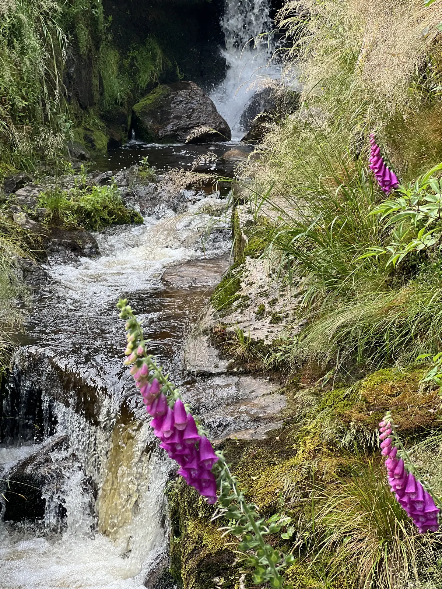
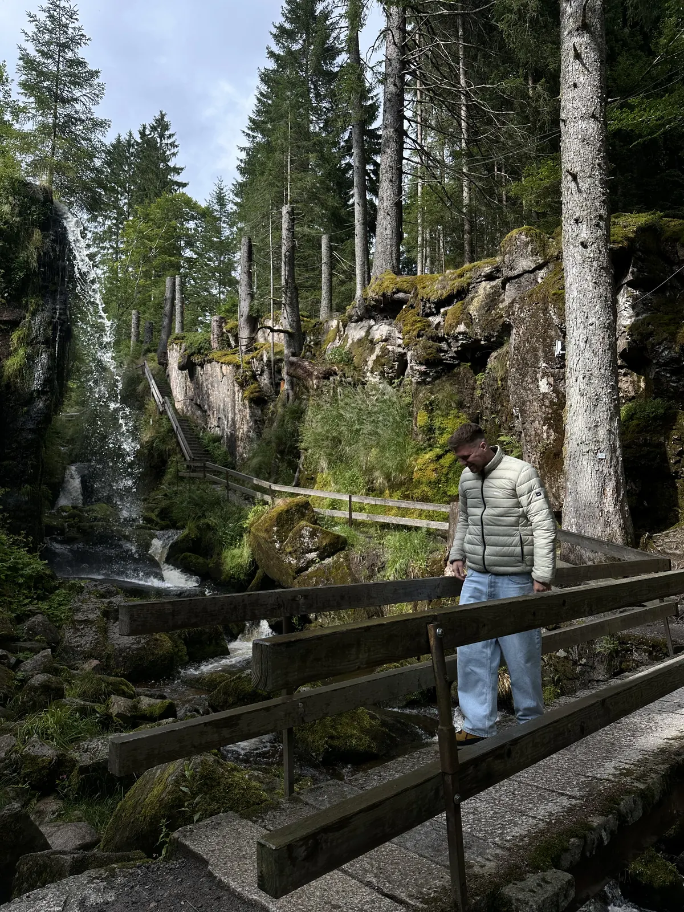
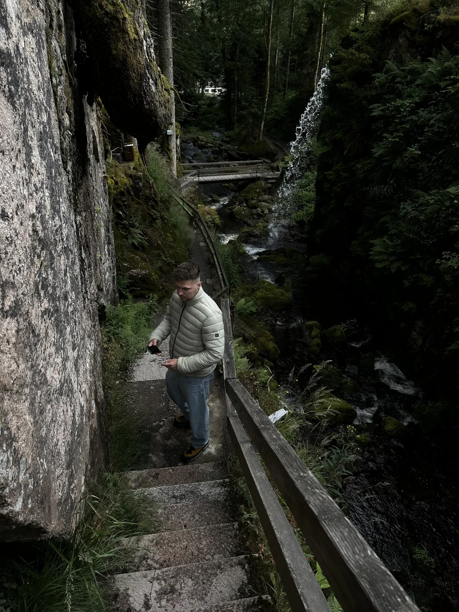

🇩🇪 Schwarzwald Guide: 12 Orte – Hochstraße, Triberg, Gengenbach & Schluchten

Inhaltsverzeichnis
Der Schwarzwald ist Wald, Fachwerk und Kuckucksuhren. Preise und Zeiten sind Richtwerte (Stand 2026).
🗺️ Karte: alle 12 Orte
Meine Story in Schwarzwald
Mein Tipp: die Schwarzwaldhochstraße mit Stopp am Mummelsee.
Dieser Guide enthält Werbe-Links (GetYourGuide, Omio). Wenn du darüber buchst, bekomme ich eine kleine Provision – du zahlst keinen Cent mehr. Preise und Öffnungszeiten ändern sich – vor dem Besuch kurz prüfen.
🆓 Kostenlos erleben
5 Orte in Schwarzwald, die du ohne Eintritt oder komplett gratis erleben kannst (bei manchen kostet nur ein Teil, z. B. Turm oder Museum):
Auf einen Blick
So kommst du hin und herum
Für den Schwarzwald ist ein Auto praktisch; Freiburg ist ein guter Ausgangspunkt.
Der Schwarzwald ist groß – ein Auto gibt dir die meiste Freiheit, besonders für die Hochstraße und die Täler. Mit dem Zug kommst du gut nach Freiburg, Baden-Baden, Titisee-Neustadt und Triberg; die Höllentalbahn zwischen Freiburg und Titisee ist selbst schon ein Erlebnis.
Viele Unterkünfte geben dir eine Gästekarte (z. B. die KONUS-Karte), mit der du Busse und Bahnen in der Region kostenlos nutzen kannst – frag bei der Buchung danach. Winterreifen sind in den Höhenlagen von Oktober bis April Pflicht.
1. Must-Sees
Schwarzwaldhochstraße & Mummelsee🆓 Kostenlos erlebbar
Die Panoramastraße mit Stopp am Mummelsee.
Die Schwarzwaldhochstraße (B 500) führt von Baden-Baden nach Freudenstadt und ist eine der ältesten Ferienstraßen Deutschlands. Auf rund 60 Kilometern geht es über Höhen von etwa 800 bis 1.000 Metern durch Wald, Moor und Heide, mit Aussichtspunkten, Parkplätzen und Wanderwegen am Straßenrand.
Der Mummelsee auf rund 1.000 Metern Höhe ist ein Karsee, um den sich viele Sagen ranken: Mummeln (Wassernymphen) sollen hier leben, und ein Seekönig soll im Wasser wohnen. Am See gibt es Tretboote, Cafés und Souvenirshops – im Sommer und an Wochenenden voll, deshalb früh oder am späten Nachmittag kommen. Eine Runde um den See ist leicht gehbar und dauert etwa eine halbe Stunde.
Tipp: Fahr früh am Morgen oder unter der Woche – an Sommer-Wochenenden ist die Straße voll.
Hornisgrinde – höchster Gipfel des Nordschwarzwalds
Die Hornisgrinde ist mit etwa 1.160 Metern der höchste Berg im nördlichen Schwarzwald. Du erreichst sie vom Mummelsee aus auf einem Wanderweg; oben erwartet dich ein Hochmoor mit Holzstegen, Heidekraut und einem Aussichtsturm, von dem du an klaren Tagen bis zu den Vogesen und zum Rheintal blickst.
Das Moor ist empfindlich – bleib auf den Wegen. Der Aufstieg vom Mummelsee dauert gut eine Stunde, je nach Route. Zieh eine Jacke an, oben weht fast immer Wind.
Tipp: Kombiniere sie mit dem Mummelsee-Stopp und plane zwei bis drei Stunden ein.
Titisee & Feldberg🆓 Kostenlos erlebbar
Der Titisee ist ein eiszeitlicher See im Hochschwarzwald, umgeben von Wald, mit Promenade, Cafés und Ausflugsbooten. Im Sommer ist es voll und touristisch – aber ein Spaziergang in die ruhigeren Seitenbereiche des Sees lohnt sich. Probiere hier Schwarzwälder Kirschtorte oder ein Stück Käsekuchen am Wasser.
Vom Titisee aus erreichst du in etwa 30 Minuten den Feldberg: mit rund 1.493 Metern der höchste Berg des Schwarzwalds. Eine Seilbahn führt zum Seebuck mit Aussicht, Wege laufen über Almweiden; im Winter ist hier Skigebiet. Zieh dich warm an, denn oben ist es deutlich kühler.
Tipp: Starte am Feldberg früh und fahr am Nachmittag zum Titisee – dann ist es dort noch gut aushaltbar.
Baden-Baden
Die Kurstadt am Rand des Schwarzwalds ist bekannt für ihre Thermalquellen, das Casino und die elegante Lichtentaler Allee, einen Spazierweg entlang der Oos. Im Friedrichsbad kannst du das römisch-irische Bad erleben; die Caracalla-Therme ist moderner und mit Panoramablick. Beide haben Hausregeln (zum Beispiel Textilfreiheit im Friedrichsbad) – vorher informieren.
Baden-Baden ist ein guter Startpunkt für die Schwarzwaldhochstraße und eine entspannte Ergänzung zu den Wanderungen. Plane einen halben bis ganzen Tag ein; Preise und Öffnungszeiten vorab prüfen.
Tipp: Starte in Baden-Baden und fahr die Hochstraße am nächsten Morgen.
2. Dörfer, Uhren & Tradition
Triberg: Kuckucksuhren & Schwarzwälder Kirschtorte
Triberg gilt als Hauptstadt der Kuckucksuhren. In den Läden und im Schwarzwaldmuseum siehst du die Uhren, die seit dem 18. Jahrhundert im Schwarzwald gebaut wurden – von kleinen Wanduhren bis zu riesigen Exemplaren. Einige Betriebe haben Werkstätten, in denen du sehen kannst, wie die Uhren entstehen.
Zum Pflichtprogramm gehört die Schwarzwälder Kirschtorte: Biskuit, Sahne, Kirschen und Kirschwasser. Frag in den Cafés nach der traditionellen Variante mit Kirschwasser – sie ist die echte. Kauf nur Uhren, die dir wirklich gefallen; die Preise unterscheiden sich stark zwischen handgefertigten und Serienuhren.
Tipp: Kombiniere Wasserfälle, Uhren und Kuchen an einem Tag – alles liegt nah beieinander.
Gengenbach – Fachwerkstadt💎 Hidden Gem
Gengenbach im Kinzigtal ist eine kleine Fachwerkstadt mit Marktplatz, Rathaus von 1784 und gepflegten Gassen. Im Dezember wird das Rathaus zum größten Adventskalender der Welt: Jeden Abend öffnet sich ein neues Fenster. Außerhalb der Adventszeit lohnt der Ort für einen ruhigen Spaziergang und Wein von den Hängen ringsum.
Hier merkst du, wie der Schwarzwald auch ohne Berge wirkt: Rebhänge, Obstbäume, Fachwerkhäuser. Plane einen halben Tag ein und iss in einer Straußwirtschaft oder einem Gasthof, wenn du magst.
Tipp: Im Dezember früh kommen und Stimmung genießen; sonst am Wochenende – dann hat alles offen.
Vogtsbauernhof Freilichtmuseum (Gutach)
Im Freilichtmuseum bei Gutach stehen original Schwarzwaldhöfe, die hierher versetzt wurden. Du siehst, wie Familien mit Vieh unter einem Dach lebten, wie Mühlen und Sägewerke funktionierten und wie die Kuckucksuhren entstanden. An bestimmten Tagen gibt es Handwerksvorführungen.
In Gutach ist auch der Bollenhut zu Hause – der Hut mit den roten Wollkugeln, der für den Schwarzwald steht. Plane zwei bis drei Stunden ein; Eintritt und Öffnungszeiten vorher prüfen, das Museum ist saisonal geöffnet.
Tipp: Plan ihn für einen Regentag oder für heiße Tage ein – es gibt viel Schatten und Dächer.
3. Hidden Gems
Triberger Wasserfälle💎 Hidden Gem
Hier fressen dir Eichhörnchen aus der Hand – auf meiner Karte.
Die Triberger Wasserfälle fallen in sieben Stufen insgesamt rund 163 Meter in die Tiefe und gelten als eine der höchsten Wasserfallanlagen Deutschlands. Ein Weg mit Treppen führt neben dem Wasser hinauf; an mehreren Stellen kannst du das Tosen aus nächster Nähe erleben. Der Eintritt ist kostenpflichtig (Preise vorher prüfen).
Im Wald rund um die Fälle leben Eichhörnchen, die an manchen Stellen zutraulich sind. Nimm ein paar Haselnüsse mit – aber füttere sie nur mit passendem Futter, nicht mit Brot oder Süßem. Gute Schuhe sind sinnvoll, weil die Stufen nass sein können. Plane eine Stunde ein.
Tipp: Komm früh am Morgen oder spät am Nachmittag, dann sind weniger Menschen da und die Eichhörnchen aktiver.
Ravennaschlucht & Viadukt💎 Hidden Gem🆓 Kostenlos erlebbar
Bei Hinterzarten verläuft die Ravennaschlucht, eine enge Schlucht mit Wasserfällen, kleinen Brücken und Felsen. Über sie spannt sich das Ravennaviadukt, eine hohe Eisenbahnbrücke der Höllentalbahn. Der Weg durch die Schlucht ist schattig und ein schöner Kontrast zu den sonnigen Höhen.
Es gibt Wanderwege unterschiedlicher Länge; Wanderschuhe sind sinnvoll. Wenn du Glück hast, siehst du einen Zug über das Viadukt fahren. Plane ein bis zwei Stunden ein – das ist ein ruhigerer Tipp abseits der großen Ziele.
Tipp: Geh am Morgen – dann ist der Weg leer, und die Sonne scheint ins Tal.
Wutachschlucht – Wildnis im Südschwarzwald💎 Hidden Gem🆓 Kostenlos erlebbar
Die Wutachschlucht gilt als eine der wildesten Schluchten Deutschlands: ein Wanderweg am Fluss entlang durch Felsen, Wald und Schluchtabschnitte. Der Weg ist teilweise schmal und gesichert; wer wandern will, braucht Trittsicherheit, festes Schuhwerk und Zeit, denn die Strecken dauern mehrere Stunden.
Die Schlucht ist ein Naturschutzgebiet – bleib auf den Wegen und nimm Müll wieder mit. Informiere dich vorher über gesperrte Abschnitte, besonders nach Regen oder im Winter.
Tipp: Starte früh, nimm Wasser und Proviant mit und prüfe vorher gesperrte Abschnitte.
Baumwipfelpfad Bad Wildbad
Der Baumwipfelpfad in Bad Wildbad führt auf rund 1,25 Kilometern in den Baumkronen entlang, begleitet von einem spiralförmigen Turm, der dich bis auf rund 40 Meter Höhe bringt. Von oben siehst du über den Nordschwarzwald; Infotafeln erklären Tiere und Bäume.
Der Weg ist barrierefrei gebaut und gut mit Kindern machbar. Eintritt und Öffnungszeiten ändern sich, bitte vorher prüfen. Am besten kombinierst du ihn mit einem Spaziergang im Ort oder dem Besuch der Therme.
Tipp: Komm vormittags und kombiniere ihn mit der Hochstraße.
Menzenschwander Wasserfälle💎 Hidden Gem🆓 Kostenlos erlebbar
Im Ortsteil Menzenschwand (St. Blasien) stürzt die junge Alb über mehrere Stufen ins Tal. Holzstege und der schmale Geißenpfad führen ganz nah an das Wasser heran – moosige Felsen, Tannen und im Frühsommer leuchtend lila Fingerhut am Wegrand.
Die Wasserfälle sind kostenlos und deutlich ruhiger als die bekannten Triberger Fälle. Der kurze Rundweg ist in etwa einer Stunde machbar und lässt sich mit dem Feldberg oder dem Schluchsee verbinden.
Tipp: Rutschfeste Schuhe anziehen – die Stege sind nach Regen glatt.


Was den Süden ausmacht
Kuckucksuhren werden im Schwarzwald seit dem 18. Jahrhundert gebaut.
📍 Diesen Guide in Google Maps speichern
1. Schnell: Route öffnen
2. Dauerhaft: als eigene Karte (2 Minuten)
- Lade die Datei mit allen Pins herunter (KML-Button unten).
- Öffne Google My Maps → „Neue Karte erstellen“ → „Importieren“ → Datei auswählen.
- Fertig – alle Orte stehen exakt an der richtigen Stelle, mit Nummer, Tipp und Link zum Guide.
- In der Google-Maps-App findest du die Karte unter „Gespeichert“ → „Karten“, auch unterwegs.
⬇️ Alle Pins für Google Maps (KML) ⬇️ Ortsliste herunterladen (CSV)
3. Einzeln speichern
Dein Plan
Tag 1: Tag 1 – Hochstraße & Nordschwarzwald
- Vormittag – Baden-Baden, dann auf die Hochstraße
- Mittag – Mummelsee und Hornisgrinde
- Nachmittag – Baumwipfelpfad oder Gengenbach
- Abend – Abendessen in einem Gasthof
Tag 2: Tag 2 – Triberg & Uhren
- Vormittag – Triberger Wasserfälle (früh)
- Mittag – Kirschtorte im Café
- Nachmittag – Schwarzwaldmuseum, Vogtsbauernhof
- Abend – zurück oder Übernachtung
Tag 3: Tag 3 – Hochschwarzwald
- Vormittag – Ravennaschlucht oder Wutachschlucht
- Mittag – Titisee
- Nachmittag – Feldberg
Häufige Fragen
Brauche ich ein Auto?
Praktisch ja.
Wie viele Tage braucht man im Schwarzwald?
Wann ist die beste Reisezeit für den Schwarzwald?
🗺️ Alle Orte auf meiner Karte → Mehr Guides und Reels auf Instagram: @hiddengem.atlas
Guide teilen: Per WhatsApp